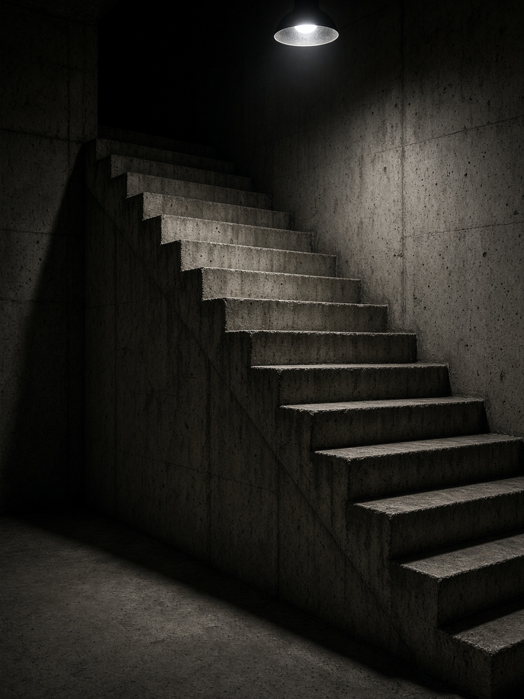
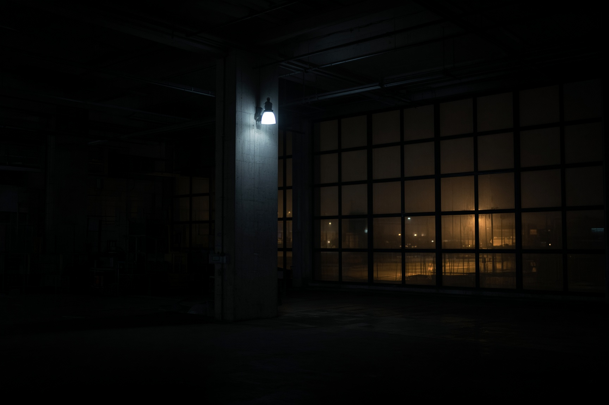

Assemblage 23 è il progetto di Tom Shear. Scrive i brani, li canta, li programma e li produce da solo. In studio non entra una band: entra una persona e una macchina. Dal vivo il quadro cambia. Paul Seegers sta alle tastiere, Mike Jenney alla batteria. Il nome resta singolare.
Il progetto nasce nel 1988, dopo che Shear sente — da un DJ di apertura a un concerto dei Depeche Mode — la dance industriale che stava cercando. Prima c’erano pezzi strumentali firmati Man on a Stage, nei primi anni Ottanta, e il basso in una band dal vivo, gli Advocates. Per un decennio Assemblage 23 resta un lavoro di casa. Le influenze che nomina sono precise: Depeche Mode, Devo, Human League, Fad Gadget, OMD. Il primo album aspetta fino al 1999.

Nel 1999 la canadese Gashed! pubblica «Contempt». «Failure», nel 2001, contiene «Disappoint», scritto dopo il suicidio del padre, il 28 ottobre 1999. Chiuso il rapporto con Gashed!, da fine 2001 i dischi escono su Metropolis, con Accession per l’Europa. «Ground», da «Storm» (ottobre 2004), resta otto settimane nella classifica singoli DAC e arriva al numero 2.
«Binary» entra nella classifica singoli Billboard USA al numero 21 nel marzo 2007, prima di «Meta». Seguono «Compass» (2009), «Bruise» (2012), «Endure» (2016). «Mourn» esce l’11 settembre 2020, scritto in un periodo di depressione e durante la pandemia: a differenza dei dischi precedenti, non c’è un tour. Sul futurepop, etichetta con cui viene spesso archiviato, Shear ha detto — non del tutto sul serio — che si tratta di «mostly people who can’t sing, over 90s-era trance patches»: gente che in gran parte non sa cantare, sopra patch trance degli anni Novanta.

«Null», decimo album in studio, esce il 7 novembre 2025 su Metropolis: CD, vinile, digitale, senza edizione speciale. Shear lo descrive come un disco da club, energico. Nell’ottobre 2026 il live torna in Germania e in Svezia. Il 2 ottobre esce un remix di «Believe» firmato da INHALT. Il 19 dicembre è annunciato Los Angeles, dentro la serie History of Industrial di Das Bunker. Il 6 febbraio 2027 tocca a Toronto, Ground Control.
La sede di lavoro oggi è Franklin, Massachusetts. Per gran parte del percorso il progetto è stato associato a Seattle; le origini stanno in Pennsylvania. Il metodo non è cambiato: una voce, una macchina, e due persone in più quando si accendono le luci.